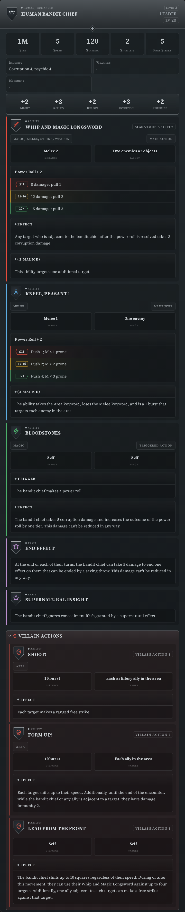
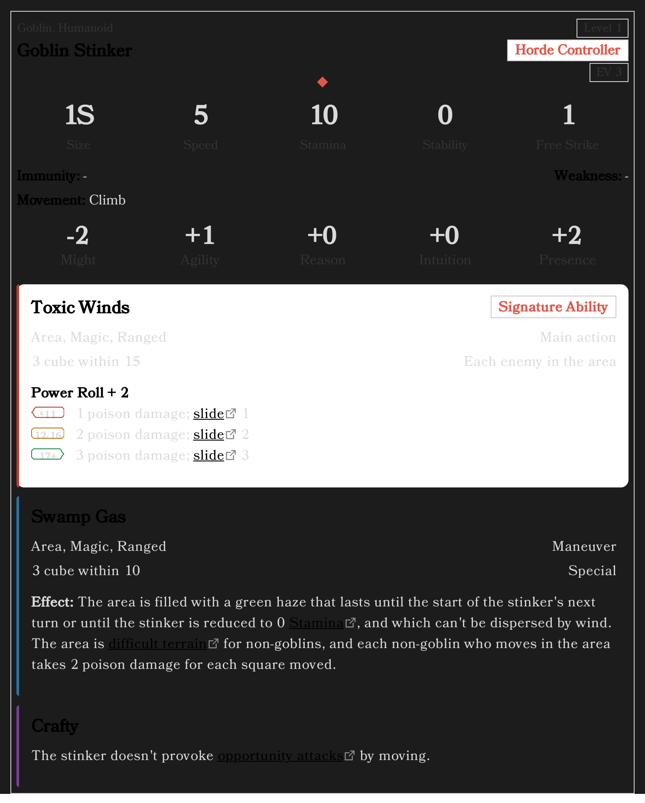

Style Your Statblocks¶
Statblocks can be laid out several ways — cards or a flat list, roomy or compact, one column or two. It's a setting, not something you write into the block, so changing it restyles every statblock in your vault at once.
New to the plugin? Start with Getting started.
Start with a preset¶
Open Settings → Draw Steel Elements → Statblock display. The first row is Preset:
- Steel card — the plugin's own look, and the default.
- Sourcebook — the flat, book-style layout.
- Index card — compact, for quick reference at the table.

Pick one and watch the preview at the bottom of the page change. That preview is a real statblock rendered by the real plugin, so what you see is what your notes will look like.
A preset just sets the nine options below it in one go. Change any single one afterwards and the box reads Custom — nothing is lost, it simply isn't one of the three named bundles any more.
The individual controls¶
The four on the main page are the ones that change the shape of a card most:
- Feature style — abilities as Cards or as a Flat list.
- Density — Comfortable or Compact.
- Feature columns — Single column, or Side-by-side on a wide screen.
- Secondary stats — the Immunity / Weakness / Movement block as a grid, a centred grid, or a hairline ledger.
Side-by-side is worth a look if you read on a wide window:

Under Advanced on the same page are three more, all matching the website's own options: Characteristics, Boxed first letter and Villain actions (listed inline, or gathered into one collapsible band).
Two more that a preset also writes — Keyword display and Distance + target — live on the Feature display page, because they restyle the ability card itself wherever it appears rather than the statblock around it.
Feature blocks — Malice, Dynamic Terrain — have their own page, Featureblock display, with the same idea and a featureblock in the preview.
Every option is described one by one in the settings guide.
Make the text bigger¶
Settings → Draw Steel Elements → Typography:
- Text size (60%–140%) scales the text inside every Draw Steel element.
- Card size (80%–120%) scales whole cards.
- Title / Body / Controls font — pick from the list, or type any font you have installed. "Default (Obsidian vault fonts)" keeps your vault's own.
These apply everywhere, including print and export.
Just this one block¶
Occasionally you want one statblock to differ — a compact one in a busy session note, say. A block can pin its own layout:
~~~ds-statblock
prefs:
sbDensity: compact
sbFeatureStyle: flat
name: Goblin Stinker
…
~~~
The names are the setting keys, listed in Advanced usage. Three settings that change a card's structure rather than its styling — Characteristics, Boxed first letter, Villain actions — and all the typography settings are deliberately global only.
Printing and PDFs¶
Everything you pick carries into print and export. To check a handout without printing it, turn on Settings → Appearance → Print preview, which shows every element in its print layout on screen:

Villain actions are always shown open in print, whatever the band setting says — paper has no disclosure triangles.
See also¶
- Settings — every page, every option
- Statblock Element — the fields themselves
- Advanced usage — per-block overrides in full